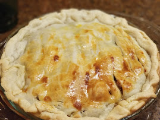

This recipe is delicous. It's perfect to warm up your inside on a cold fall night. It will boost your mood when the days are getting shorter and darker.
- Justyna S.
This pie is so good, I could have it every day. THe flaky crust is perfect balance to the savory filling. Highly Recommend this recipe
- Janice S.
The pie had a great filling and the crust was a perfect crisp to add to the savory taste of the pie!
- Gayan P.